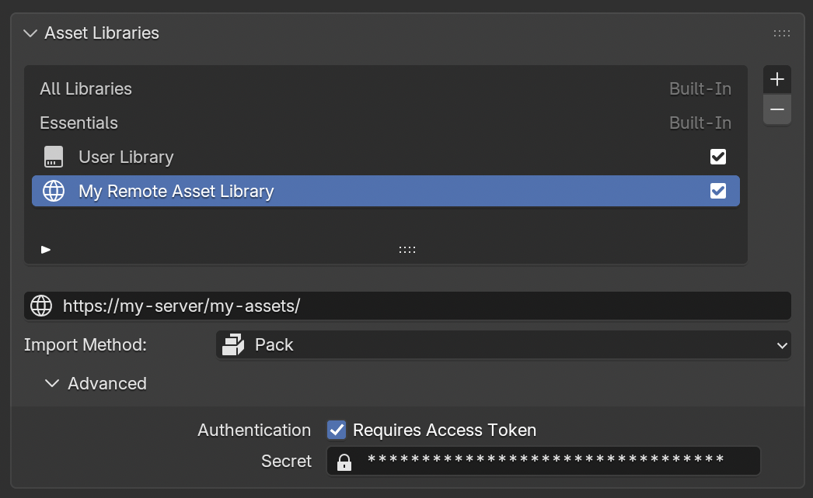

Thư viện Asset Từ xa¶
Một Remote Asset Library (thư viện asset từ xa) là một Asset Library kèm theo một vài file bổ sung, được lưu trên một server để có thể truy cập từ xa.
Trong trường hợp này, "Remote" (từ xa) có nghĩa là "truy cập thông qua kết nối mạng". Nó có thể được phục vụ ngay từ chính máy tính của bạn, không nhất thiết phải ở xa.
Một vài ví dụ:
Phần trực tuyến của thư viện asset Essentials của Blender.
Bộ asset Geometry Nodes do một nhà sáng tạo độc lập xuất bản cho những người ủng hộ họ.
Danh mục sản phẩm của một cửa hàng nội thất, để kit-bashing hoặc dùng thử trong bản quét 3D phòng khách của bạn.
Tải Asset¶
Asset có thể được tải về từ bất kỳ nơi nào chúng được hiển thị, ví dụ:
Asset Browser: nhấp chuột phải và chọn "Download Asset".
Asset Shelf: nhấp vào nút tải xuống xuất hiện khi bạn di chuột tới asset.
Menu 'Add' của Compositor Nodes: nhấp chuột phải vào mục menu của asset, rồi chọn 'Download Asset'.
Asset được tải về thư mục cache cục bộ. Chúng thường không dành cho việc chỉnh sửa, vì thường đã bị lược bớt mọi thứ không cần thiết để file tải về càng nhỏ càng tốt. Để duyệt cache asset, chẳng hạn để xóa những file asset bạn từng tải về nhưng không còn muốn dùng, hãy nhấp chuột phải vào một asset trong Asset Browser và chọn 'Open File Location'.
Hạn chế¶
Các hạn chế sau đây áp dụng cho thư viện asset từ xa:
Mỗi file
.blendnên độc lập. Bất kỳ phần phụ thuộc bên ngoài nào, chẳng hạn các file.pngcho texture, đều phải được đóng gói vào trong file blend. File.blendchứa nhiều asset cũng không sao. Điều quan trọng là khi file.blendđược tải về, các asset trong đó phải dùng được ngay mà không cần tải thêm bất kỳ file nào khác.Blender không có khái niệm phiên bản asset. Nghĩa là sau khi tải một asset về, Blender chỉ có thể phát hiện xem thư viện từ xa đang có file giống hệt hay khác đi. File đó có thể là một phiên bản cập nhật, hoặc cũng có thể đã bị quay về phiên bản cũ hơn. Thậm chí file
.blendcó thể đã bị thay đổi nào đó sau khi bạn tải về. Điều duy nhất Blender biết được là chúng có giống nhau hay không.
Các Thành phần của Remote Asset Library¶
Một Remote Asset Library gồm các thành phần sau:
Các asset. Đây là các file
.blendmà mỗi file chứa một hoặc nhiều asset. Mỗi file.blendcần độc lập với mọi file khác, tức là không link qua lại giữa các file, và phải pack texture cùng các file bên ngoài khác. Về cơ bản: để có được một asset, chỉ cần tải đúng file.blendlà đủ.Bản liệt kê (Listing). Đây là các file
.jsonmà Blender có thể tạo ra, mô tả những asset có sẵn trong thư viện. Bản liệt kê này cũng chứa các catalog.Ảnh xem trước. Đây là các ảnh xem trước (không bắt buộc) được hiển thị cho người dùng trong asset browser và asset shelf. Nên có kích thước tối thiểu 256x256 pixel và phải dùng định dạng WebP (được khuyến nghị) hoặc PNG. Khi tạo bản liệt kê, Blender sẽ xuất các ảnh xem trước ra file WebP.
Tạo một Remote Asset Library¶
Một thư viện từ xa có thể là bất kỳ thư mục nào chứa các file .blend có asset bên trong, giống như một asset library thông thường. Nó chỉ cần thêm một bộ file gọi là asset listing (bản liệt kê asset), mà Blender có thể tạo ra.
Từ thư mục của asset library, hãy chạy lệnh này trong terminal:
$ cd /path/to/asset-library
$ blender -b -c asset_listing generate .
Các lệnh này cũng có thể được gộp thành một lệnh duy nhất:
$ blender -b -c asset_listing generate /path/to/asset-library
Lệnh này nên được chạy bất cứ khi nào một asset hoặc asset catalog thay đổi. Bao gồm cả việc chỉnh sửa (kể cả chỉ lưu lại file), xóa asset, hay tạo asset mới.
Sau khi bộ tạo bản liệt kê đã chạy xong, hãy chỉnh sửa file _asset-library-meta.json (bất kỳ trình soạn thảo văn bản thuần nào cũng được) để cập nhật tên và thông tin liên hệ của asset library:
{
"api_versions": {
"v1": {
"url": "_v1/asset-index.json",
"hash": "SHA256:5ba68debdc34ece8ddb1ca6ea4c7acf3287b657c72da47277e09bd30e2c7d02e"
}
},
"name": "My amazing Assets", // <-- Edit this
"contact": {
"name": "Your Name", // <-- Edit this
"url": "https://example.org/", // <-- Edit this
"email": "example@example.org" // <-- Edit this
}
}
Chạy lại bộ tạo bản liệt kê sẽ giữ nguyên thông tin này, nên bạn chỉ cần chỉnh một lần duy nhất.
Phục vụ Remote Asset Library¶
Để thử nghiệm, hãy chạy một trong các lệnh sau từ thư mục của asset library:
Blender:
blender -q -b --python-expr "import runpy, sys; sys.argv=[sys.argv[0], '-b', '127.0.0.1']; runpy.run_module('http.server', run_name='__main__')"Python:
python3 -m http.serverPicoHTTP: Tải picohttp về và chạy
picohttp.
Để thực sự phục vụ các file, bất kỳ web server tĩnh nào (nginx, Apache) cũng đều được.
Tạo Asset cho Các Phiên Bản Blender Cụ thể¶
Các asset trong thư viện trực tuyến có thể nhắm đến các phiên bản Blender khác nhau, miễn là chúng được lưu trong các file khác nhau. Ví dụ, một asset vốn được tạo cho Blender 5.2 có thể nằm cạnh một asset cho Blender 5.3. Cách làm là lưu phiên bản mới vào một file blend khác, với @b5_3 được thêm vào tên file:
my_asset.blend: asset gốc cho Blender 5.2.my_asset@b5_3.blend: bản thay thế của nó cho Blender 5.3.
Khi bản liệt kê thư viện được tạo (xem phần trên), các asset từ my_asset.blend sẽ được đánh dấu là dùng cho đến (nhưng không bao gồm) Blender 5.3, còn các asset trong my_asset@b5_3.blend dùng cho 5.3 trở đi.
Có thể mở rộng vô hạn: file thứ ba my_asset@b47_0.blend sẽ khả dụng từ Blender 47.0, còn các asset trong my_asset@b5_3.blend sẽ được dùng trước phiên bản đó.
Yêu cầu đối với Web Server¶
Dù dùng web server nào, nó PHẢI đáp ứng các điều sau:
Chỉ rõ kích thước của từng file trong response header
Content-Length.Bỏ qua các tham số query string khi phục vụ file tĩnh. Tức là
some_file.blend?hash=abcdefchỉ cần phục vụ filesome_file.blend(không kèm?hash=abcdeftrong tên file).
Rất nên (nhưng không bắt buộc) hỗ trợ conditional requests thông qua các header Last-Modified / If-Modified-Since, và/hoặc các header ETag/If-None-Match.
Điều này sẽ giảm đáng kể băng thông mà Blender dùng để đồng bộ định kỳ bản liệt kê asset. Khi bản liệt kê không thay đổi, server chỉ cần trả về 304 Not Modified thay vì truyền lại các file.
Access Token¶
Tương tự kho Extensions, một số thư viện asset từ xa có thể yêu cầu xác thực.


Người dùng có thể chỉ định một access token cho asset library trong phần cài đặt nâng cao của nó.¶